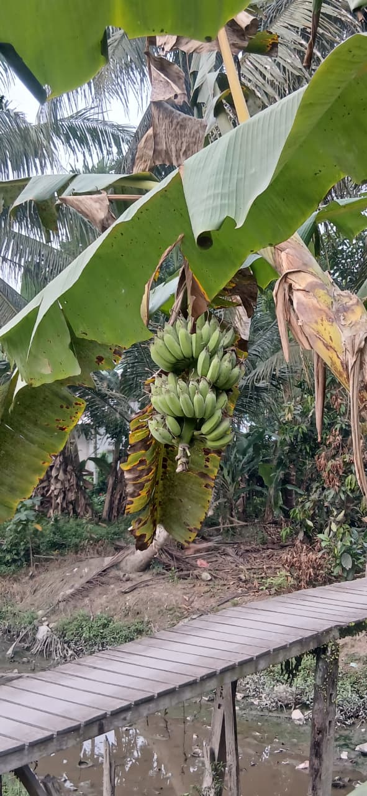
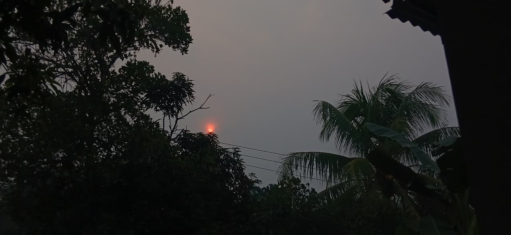

🌾 ALAM
Hamparan Sawah
Hamparan sawah memberikan pemandangan hijau yang menjadi salah satu suasana khas pedesaan.

🌿 TUMBUHAN
Tumbuhan Desa
Berbagai tumbuhan yang berada di sekitar desa membuat lingkungan terlihat lebih hijau dan alami.

☀️ PEMANDANGAN
Cahaya Sore
Cahaya sore memberikan suasana yang hangat dan indah di lingkungan Desa Seburing Hilir.